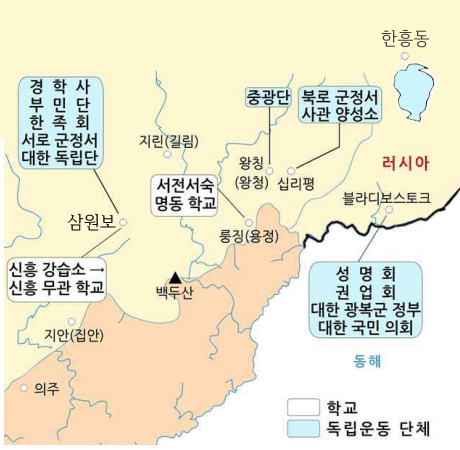

android_history_ver:2.21
: 정오표에 등록된 오류를 수정
: 일부 저질 해설.오타를 수정
지9.2017하, 국9.2017
: 너무 부실하거나 불친절한 키워드를 수정.보완
: 최근 키워드를 추가.보완함
[주제별 풀기]모드 작업중
---
청일전쟁 발발시점을 {선전포고}기준에서 {풍도해전}기준으로 변경함
현버전(2.20)[공지,정오표,오류]
백제 성왕
: 사비천도(538, 당시 신라왕.법흥왕)
(신라왕.진흥왕으로 잘못표시.. 완전죄송ㅠㅠ(반성중))
---
[국외독립운동기지]
한흥동in밀산부
: by이상설 등
(기존에 신민회로 잘못표시)

------
[국9.2017년10번]
: 간도관리사 임명(1903)
(1902년으로 잘못 표시)
(예전에 한번 수정했는데 수정이 안 된 것이 있네엽ㅠㅠ)
-----
[지9.2017하.17번]
: 순서오류
화폐정리사업➔2차 한일협약(1905.11)
(2차 한일협약 다음에 화폐정리사업으로 잘못표시ㅠㅠ)
----
[국7_2017하_5번]
저렴한 표현 추가 예정
사초(비공개 속기록 비슷)
시정기(각 관청이 보고한 업무일지 묶은 것)
승정원일기(대통령비서실 기록물 비슷)
android_history_ver:2.20
: 정오표에 등록된 오류를 수정
: 일부 저질 오타를 수정
국9.15년 해설수정
(너무 부실하거나 불친절한 키워드를 수정)